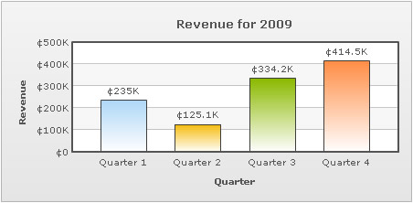
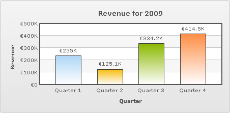

| Using Currency Symbols on Chart |
Currency symbols, For example, £(Pound), €(Euro), ¥(Yen) etc., may also be a part of the data which is displayed on charts. This section guides you on how to include the most used currency symbols as a part of your charts. |
| Using Pound(£) sign |
|
To display Pound character on a chart, you can simply include it in the XML/JSON data source of the chart. This is applicable in both Data URL and Data String methods. Following data includes the £ character: |
<chart showValues="1" caption="Revenue for 2009" numberPrefix="£" xAxisName="Quarter" yAxisName="Revenue" > {
|
|
The above data produces a chart with the £ symbol prefixed to all numeric values: When using the HTML embedding method with data provided as embedded string, it is essential to encode pound character as %A3. |
| Using Yen(¥) sign |
|
To display Yen character on a chart, you can simply include it in the XML/JSON data source of the chart. This is applicable in both Data URL and Data String methods. Following data includes ¥ character: |
<chart showValues="1" caption="Revenue for 2009" numberPrefix="¥" xAxisName="Quarter" yAxisName="Revenue" > {
|
|
The above data produces a chart with ¥ prefixed to all numeric values: When using the HTML embedding method with data provided as embedded string, it is essential to encode yen character as %A5. |
| Using Cent(¢) sign |
|
To display Cent character on a chart, you can simply include it in the XML/JSON data source of the chart. This is applicable in both Data URL and Data String methods. Following data includes ¢ character: |
<chart showValues="1" caption="Revenue for 2009" numberPrefix="¢" xAxisName="Quarter" yAxisName="Revenue" > {
|
|
The above data produces a chart with ¢ prefixed to all numeric values:  When using the HTML embedding method with data provided as embedded string, it is essential to encode cent character as %A2. |
| Using Euro(€) sign |
|
To display Euro character on a chart, you can simply include it in the XML/JSON data source of the chart. This is applicable in both Data URL and Data String methods. Following data includes € character: |
<chart showValues="1" caption="Revenue for 2009" numberPrefix="€" xAxisName="Quarter" yAxisName="Revenue" > {
|
|
The above data produces a chart with the € symbol prefixed to all numeric values:  Euro character falls into the category of extended unicode character-set. To display a euro character in your chart, the XML file should be encoded with UTF-8 BOM signature, otherwise the character will not be displayed properly. To know more about BOM and how to add it in your XML, please read What is BOM. |
| Using Franc(₣) sign |
|
To display Franc character on a chart, you can simply include it in the XML/JSON data source of the chart. This is applicable in both Data URL and Data String methods. Following data includes ₣ character: |
<chart showValues="1" caption="Revenue for 2009" numberPrefix="₣" xAxisName="Quarter" yAxisName="Revenue" > {
|
|
The above data produces a chart with ₣ prefixed to all numeric values: Franc character falls into the category of extended unicode character-set. To display a franc character in your chart, the XML file should be encoded with UTF-8 BOM signature, otherwise the character will not be displayed properly. To know more about BOM and how to add it in your XML, please refer to What is BOM. |